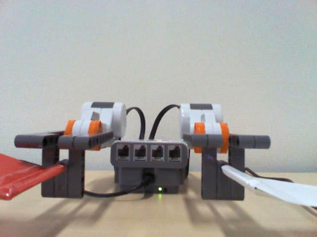
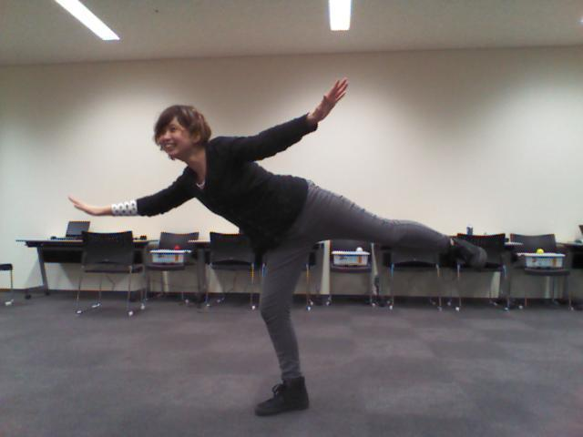

Picodeワークショップ～カラダをつかってロボットプログラミング！～
Picodeワークショップ～カラダをつかってロボットプログラミング！～
Human human;
MindstormsNXT nxt;
PFont font, largeFont;
void setup() {
// いろいろ初期化
nxt = new MindstormsNXT();
nxt.connect();
human = new Human();
human.showCaptureFrame(true);
font = createFont("Meiryo UI", 24, true);
largeFont = createFont("Meiryo UI", 40, true);
size(640, 640);
frameRate(15);
// はじめの姿勢
nxt.setPose());
}
void draw() {
// 姿勢取得
Pose pose = human.getPose();
// 背景クリア
if (pose == null) {
background(200);
} else {
background(255);
}
fill(0);
// 指示
textFont(largeFont);
textAlign(CENTER);
text("はいポーズ！", 320, 610);
// 姿勢がとれなかったら何もしない
if (pose == null) {
return;
}
// ロボットがまだ動いていたら何もしない
if (nxt.isActing() == true) {
return;
}
// このポーズだったら
if (pose.eq())) {
// シュート！
nxt.setPose( ));
));
return;
}
// それ以外のときは、はじめの姿勢に戻る
nxt.setPose());
}
3/29/2013